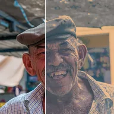

Balance de color

Empuja las sombras, los medios tonos y las luces hacia sus propios colores (el gris deja un rango sin cambios).
Tres muestras de color, Sombras, Tonos medios y Altas luces, empujan las partes oscuras, medias y brillantes de la imagen hacia su propio color. Una muestra gris deja ese rango sin cambios. Cantidad mezcla el resultado con el original. El aspecto predeterminado es un tinte verde azulado y naranja: sombras frías y altas luces cálidas.
Ajustes
| Ajuste | Tipo | Rango | Predeterminado |
|---|---|---|---|
| Sombras | Color | – | #3060A0 |
| Medios tonos | Color | – | #808080 |
| Luces | Color | – | #FFB070 |
| Cantidad | Número | 0 a 1 | 0.5 |